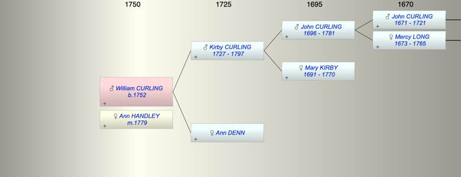

| [Index] |
| William CURLING (1752 - ) |
|  |
| b. 1752 at Wootton |
| m. 01 Jun 1779 Ann HANDLEY at St Johns Margate |
| Parents: |
| Kirby CURLING (1727 - 1797) |
| Ann DENN |
| Events in William CURLING (1752 - )'s life | |||||
| Date | Age | Event | Place | Notes | Src |
| 1752 | William CURLING was born | Wootton | Note 1 | ||
| 01 Jun 1779 | 27 | Married Ann HANDLEY | St Johns Margate | Note 2 | |
| 1797 | 45 | Death of father Kirby CURLING (aged 70) | Tilmanstone | Note 3 | |
| Personal Notes: |
| Kirby Curling was a witness to his marriage and the use of Kirby in William's son Thomas' name confirms the family link. |
| Created on a Mac™ using iFamily for Mac™ on 8 Oct 2023 |